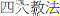

4: The Book of the Fours
180. The Great References
- © Translated from the Pali by Bhikkhu Bodhi (More copyright information)
1On one occasion the Blessed One was dwelling at Bhoganagara near the Ānanda Shrine. There the Blessed One addressed the bhikkhus: "Bhikkhus!"
"Venerable sir!" those bhikkhus replied. The Blessed One said this:
"Bhikkhus, I will teach you these four great references.[n.892] Mahāpadese. Mp glosses as mahā-okāse (apparently as if the compound could be resolved mahā + padese) and as mahā-apadese, the latter explained as "great reasons stated with reference to such great ones as the Buddha and others" (buddhādayo mahante mahante apadisitvā vuttāni mahākāraṇāni). This second resolution is certainly to be preferred. DOP gives, among the meanings of apadesa, "designation, pointing out, reference, witness, authority." Cattāro mahāpadesā is sometimes rendered "four great authorities" but the sutta actually specifies only two authorities, the suttas and the Vinaya. Walshe, in LDB, renders it as "four criteria." I understand the term to mean "four great references," the four provenances of a teaching. Listen and attend closely; I will speak."
"Yes, Bhante," those bhikkhus replied. The Blessed One said this:
2"What, bhikkhus, are the four great references?
(1) "Here, bhikkhus, a bhikkhu might say: ‘In the presence of the Blessed One I heard this; in his presence I learned this: "This is the Dhamma; this is the discipline; this is the Teacher's teaching!"’ That bhikkhu's statement should neither be approved nor rejected. Without approving or rejecting it, you should thoroughly learn those words and phrases and then check for them in the discourses and seek them in the discipline.[n.893] Tāni padabyañjanāni … sutte otāretabbāni vinaye sandassetabbāni. Mp gives various meanings of sutte and vinaye here, some improbable. Clearly, this instruction presupposes that there already existed a body of discourses and a systematic Vinaya that could be used to evaluate other texts proposed for inclusion as authentic utterances of the Buddha. Otāretabbāni is gerundive plural of otārenti, "make descend, put down or put into," and otaranti, just below, means "descend, come down, go into." My renderings, respectively, as "check for them" and "are included among" are adapted to the context. Sandassetabbāni is gerundive plural of sandassenti, "show, make seen," and sandissanti means "are seen." If, when you check for them in the discourses and seek them in the discipline, (you find that) they are not included among the discourses and are not to be seen in the discipline, you should draw the conclusion: ‘Surely, this is not the word of the Blessed One, the Arahant, the Perfectly Enlightened One. It has been badly learned by this bhikkhu.’ Thus you should discard it.
3"But a bhikkhu might say: ‘In the presence of the Blessed One I heard this; in his presence I learned this: "This is the Dhamma; this is the discipline; this is the Teacher's teaching!"’ That bhikkhu's statement should neither be approved nor rejected. Without approving or rejecting it, you should thoroughly learn those words and phrases and then check for them in the discourses and seek them in the discipline. If, when you check for them in the discourses and seek them in the discipline, (you find that) they are included among the discourses and are to be seen in the discipline, you should draw the conclusion: ‘Surely, this is the word of the Blessed One, the Arahant, the Perfectly Enlightened One. It has been learned well by this bhikkhu.’ You should remember this first great reference.
4(2) "Then a bhikkhu might say: ‘In such and such a residence a Saṅgha is dwelling with elders and prominent monks. In the presence of that Saṅgha I heard this; in its presence I learned this: "This is the Dhamma; this is the discipline; this is the Teacher's teaching."’ That bhikkhu's statement should neither be approved nor rejected. Without approving or rejecting it, you should thoroughly learn those words and phrases and then check for them in the discourses and seek them in the discipline. If, when you check for them in the discourses and seek them in the discipline, (you find that) they are not included among the discourses and are not to be seen in the discipline, you should draw the conclusion: ‘Surely, this is not the word of the Blessed One, the Arahant, the Perfectly Enlightened One. It has been badly learned by that Saṅgha.’ Thus you should discard it.
5"But … if, when you check for them in the discourses and seek them in the discipline, (you find that) they are included among the discourses and are to be seen in the discipline, you should draw the conclusion: ‘Surely, this is the word of the Blessed One, the Arahant, the Perfectly Enlightened One. It has been learned well by that Saṅgha.’ You should remember this second great reference.
6(3) "Then a bhikkhu might say: ‘In such and such a residence several elder bhikkhus are dwelling who are learned, heirs to the heritage, experts on the Dhamma, experts on the discipline, experts on the outlines. In the presence of those elders I heard this; in their presence I learned this: "This is the Dhamma; this is the discipline; this is the Teacher's teaching!"’ That bhikkhu's statement should neither be approved nor rejected. Without approving or rejecting it, you should thoroughly learn those words and phrases and then check for them in the discourses and seek them in the discipline. If, when you check for them in the discourses and seek them in the discipline, (you find that) they are not included among the discourses and are not to be seen in the discipline, you should draw the conclusion: ‘Surely, this is not the word of the Blessed One, the Arahant, the Perfectly Enlightened One. It has been badly learned by those elders.’ Thus you should discard it.
7"But … if, when you check for them in the discourses and seek them in the discipline, (you find that) they are included among the discourses and are to be seen in the discipline, you should draw the conclusion: ‘Surely, this is the word of the Blessed One, the Arahant, the Perfectly Enlightened One. It has been learned well by those elders.’ You should remember this third great reference.
8(4) "Then a bhikkhu might say: ‘In such and such a residence one elder bhikkhu is dwelling who is learned, an heir to the heritage, an expert on the Dhamma, an expert on the discipline, an expert on the outlines. In the presence of that elder I heard this; in his presence I learned this: "This is the Dhamma; this is the discipline; this is the Teacher's teaching!"’ That bhikkhu's statement should neither be approved nor rejected. Without approving or rejecting it, you should thoroughly learn those words and phrases and then check for them in the discourses and seek them in the discipline. If, when you check for them in the discourses and seek them in the discipline, (you find that) they are not included among the discourses and are not to be seen in the discipline, you should draw the conclusion: ‘Surely, this is not the word of the Blessed One, the Arahant, the Perfectly Enlightened One. It has been badly learned by that elder.’ Thus you should discard it.
9"But a bhikkhu might say: ‘In such and such a residence one elder bhikkhu is dwelling who is learned, an heir to the heritage, an expert on the Dhamma, an expert on the discipline, an expert on the outlines. In the presence of that elder I heard this; in his presence I learned this: "This is the Dhamma; this is the discipline; this is the Teacher's teaching!"’ That bhikkhu's statement should neither be approved nor rejected. Without approving or rejecting it, you should thoroughly learn those words and phrases and then check for them in the discourses and seek them in the discipline. If, when you check for them in the discourses and seek them in the discipline, (you find that) they are included among the discourses and are to be seen in the discipline, you should draw the conclusion: ‘Surely, this is the word of the Blessed One, the Arahant, the Perfectly Enlightened One. It has been learned well by that elder.’ You should remember this fourth great reference.
"These, bhikkhus, are the four great references."[n.894] The clearer of the two Chinese parallels is in DĀ 2, at T I 17b29 –18a22. Here cattāro mahāpadesā is rendered , "four great teaching dhammas." I translate the first declaration (T I 17c2–13) as follows: "If there is a bhikkhu who claims: ‘Venerable ones, in that village, city, country, I personally heard (this) from the Buddha, I personally received this teaching,’ you should not disbelieve what you hear from him, nor should you reject it, but through the suttas determine whether it is true or false; based on the Vinaya, based on the Dhamma, probe it thoroughly. If what he says is not the sutta, not the Vinaya, not the Dhamma, then you should say to him: ‘The Buddha did not say this. What you have received is mistaken! (Or: You have received it erroneously!) For what reason? Because based on the suttas, based on the Vinaya, based on the Dhamma, we (find) that what you said deviates from the Dhamma. Venerable one, you should not uphold this, you should not report it to people, but should discard it.’ But if what he says is based on the suttas, based on the Vinaya, based on the Dhamma, then you should say to him: ‘What you said was truly spoken by the Buddha. For what reason? Because based on the suttas, based on the Vinaya, based on the Dhamma, we (find) that what you said accords with the Dhamma. Venerable one, you should uphold this, you should widely report it to people; you should not discard it.’ This is the first great teaching dhamma."
1Ekaṁ samayaṁ bhagavā bhoganagare viharati ānandacetiye. Tatra kho bhagavā bhikkhū āmantesi: "bhikkhavo"ti.
"Bhadante"ti te bhikkhū bhagavato paccassosuṁ. Bhagavā etadavoca:
"cattārome, bhikkhave, mahāpadese desessāmi, taṁ suṇātha, sādhukaṁ manasi karotha, bhāsissāmī"ti.
"Evaṁ, bhante"ti kho te bhikkhū bhagavato paccassosuṁ. Bhagavā etadavoca:
2"Katame, bhikkhave, cattāro mahāpadesā?
Idha, bhikkhave, bhikkhu evaṁ vadeyya: ‘sammukhā metaṁ, āvuso, bhagavato sutaṁ sammukhā paṭiggahitaṁ – ayaṁ dhammo, ayaṁ vinayo, idaṁ satthusāsanan’ti. Tassa, bhikkhave, bhikkhuno bhāsitaṁ neva abhinanditabbaṁ nappaṭikkositabbaṁ. Anabhinanditvā appaṭikkositvā tāni padabyañjanāni sādhukaṁ uggahetvā sutte otāretabbāni, vinaye sandassetabbāni. Tāni ce sutte otāriyamānāni vinaye sandassiyamānāni na ceva sutte otaranti na vinaye sandissanti, niṭṭhamettha gantabbaṁ: ‘addhā idaṁ na ceva tassa bhagavato vacanaṁ arahato sammāsambuddhassa; imassa ca bhikkhuno duggahitan’ti. Iti hetaṁ, bhikkhave, chaḍḍeyyātha.
3Idha pana, bhikkhave, bhikkhu evaṁ vadeyya: ‘sammukhā metaṁ, āvuso, bhagavato sutaṁ sammukhā paṭiggahitaṁ – ayaṁ dhammo, ayaṁ vinayo, idaṁ satthusāsanan’ti. Tassa, bhikkhave, bhikkhuno bhāsitaṁ neva abhinanditabbaṁ nappaṭikkositabbaṁ. Anabhinanditvā appaṭikkositvā tāni padabyañjanāni sādhukaṁ uggahetvā sutte otāretabbāni, vinaye sandassetabbāni. Tāni ce sutte otāriyamānāni vinaye sandassiyamānāni sutte ceva otaranti vinaye ca sandissanti, niṭṭhamettha gantabbaṁ: ‘addhā idaṁ tassa bhagavato vacanaṁ arahato sammāsambuddhassa; imassa ca bhikkhuno suggahitan’ti. Idaṁ, bhikkhave, paṭhamaṁ mahāpadesaṁ dhāreyyātha.
4Idha pana, bhikkhave, bhikkhu evaṁ vadeyya: ‘asukasmiṁ nāma āvāse sangho viharati sathero sapāmokkho. Tassa me sanghassa sammukhā sutaṁ sammukhā paṭiggahitaṁ – ayaṁ dhammo, ayaṁ vinayo, idaṁ satthusāsanan’ti. Tassa, bhikkhave, bhikkhuno bhāsitaṁ neva abhinanditabbaṁ nappaṭikkositabbaṁ. Anabhinanditvā appaṭikkositvā tāni padabyañjanāni sādhukaṁ uggahetvā sutte otāretabbāni, vinaye sandassetabbāni. Tāni ce sutte otāriyamānāni vinaye sandassiyamānāni na ceva sutte otaranti na vinaye sandissanti, niṭṭhamettha gantabbaṁ: ‘addhā idaṁ na ceva tassa bhagavato vacanaṁ arahato sammāsambuddhassa; tassa ca sanghassa duggahitan’ti. Iti hetaṁ, bhikkhave, chaḍḍeyyātha.
5Idha pana, bhikkhave, bhikkhu evaṁ vadeyya: ‘asukasmiṁ nāma āvāse sangho viharati sathero sapāmokkho. Tassa me sanghassa sammukhā sutaṁ sammukhā paṭiggahitaṁ – ayaṁ dhammo, ayaṁ vinayo, idaṁ satthusāsanan’ti. Tassa, bhikkhave, bhikkhuno bhāsitaṁ neva abhinanditabbaṁ nappaṭikkositabbaṁ. Anabhinanditvā appaṭikkositvā tāni padabyañjanāni sādhukaṁ uggahetvā sutte otāretabbāni, vinaye sandassetabbāni. Tāni ce sutte otāriyamānāni, vinaye sandassiyamānāni sutte ceva otaranti vinaye ca sandissanti, niṭṭhamettha gantabbaṁ: ‘addhā idaṁ tassa bhagavato vacanaṁ arahato sammāsambuddhassa; tassa ca sanghassa suggahitan’ti. Idaṁ, bhikkhave, dutiyaṁ mahāpadesaṁ dhāreyyātha.
6Idha pana, bhikkhave, bhikkhu evaṁ vadeyya: ‘asukasmiṁ nāma āvāse sambahulā therā bhikkhū viharanti bahussutā āgatāgamā dhammadharā vinayadharā mātikādharā. Tesaṁ me therānaṁ sammukhā sutaṁ sammukhā paṭiggahitaṁ – ayaṁ dhammo, ayaṁ vinayo, idaṁ satthusāsanan’ti. Tassa, bhikkhave, bhikkhuno bhāsitaṁ neva abhinanditabbaṁ nappaṭikkositabbaṁ. Anabhinanditvā appaṭikkositvā tāni padabyañjanāni sādhukaṁ uggahetvā sutte otāretabbāni, vinaye sandassetabbāni. Tāni ce sutte otāriyamānāni vinaye sandassiyamānāni na ceva sutte otaranti na vinaye sandissanti, niṭṭhamettha gantabbaṁ: ‘addhā idaṁ na ceva tassa bhagavato vacanaṁ arahato sammāsambuddhassa; tesañca therānaṁ duggahitan’ti. Iti hetaṁ, bhikkhave, chaḍḍeyyātha.
7Idha pana, bhikkhave, bhikkhu evaṁ vadeyya: ‘asukasmiṁ nāma āvāse sambahulā therā bhikkhū viharanti bahussutā āgatāgamā dhammadharā vinayadharā mātikādharā. Tesaṁ me therānaṁ sammukhā sutaṁ sammukhā paṭiggahitaṁ – ayaṁ dhammo, ayaṁ vinayo, idaṁ satthusāsanan’ti. Tassa, bhikkhave, bhikkhuno bhāsitaṁ neva abhinanditabbaṁ nappaṭikkositabbaṁ. Anabhinanditvā appaṭikkositvā tāni padabyañjanāni sādhukaṁ uggahetvā sutte otāretabbāni, vinaye sandassetabbāni. Tāni ce sutte otāriyamānāni vinaye sandassiyamānāni sutte ceva otaranti vinaye ca sandissanti, niṭṭhamettha gantabbaṁ: ‘addhā idaṁ tassa bhagavato vacanaṁ arahato sammāsambuddhassa; tesañca therānaṁ suggahitan’ti. Idaṁ, bhikkhave, tatiyaṁ mahāpadesaṁ dhāreyyātha.
8Idha pana, bhikkhave, bhikkhu evaṁ vadeyya: ‘asukasmiṁ nāma āvāse eko thero bhikkhu viharati bahussuto āgatāgamo dhammadharo vinayadharo mātikādharo. Tassa me therassa sammukhā sutaṁ sammukhā paṭiggahitaṁ – ayaṁ dhammo, ayaṁ vinayo, idaṁ satthusāsanan’ti. Tassa, bhikkhave, bhikkhuno bhāsitaṁ neva abhinanditabbaṁ nappaṭikkositabbaṁ. Anabhinanditvā appaṭikkositvā tāni padabyañjanāni sādhukaṁ uggahetvā sutte otāretabbāni, vinaye sandassetabbāni. Tāni ce sutte otāriyamānāni vinaye sandassiyamānāni na ceva sutte otaranti na vinaye sandissanti, niṭṭhamettha gantabbaṁ: ‘addhā idaṁ na ceva tassa bhagavato vacanaṁ arahato sammāsambuddhassa; tassa ca therassa duggahitan’ti. Iti hetaṁ, bhikkhave, chaḍḍeyyātha.
9Idha pana, bhikkhave, bhikkhu evaṁ vadeyya: ‘asukasmiṁ nāma āvāse eko thero bhikkhu viharati bahussuto āgatāgamo dhammadharo vinayadharo mātikādharo. Tassa me therassa sammukhā sutaṁ sammukhā paṭiggahitaṁ – ayaṁ dhammo, ayaṁ vinayo, idaṁ satthusāsanan’ti. Tassa, bhikkhave, bhikkhuno bhāsitaṁ neva abhinanditabbaṁ nappaṭikkositabbaṁ. Anabhinanditvā appaṭikkositvā tāni padabyañjanāni sādhukaṁ uggahetvā sutte otāretabbāni, vinaye sandassetabbāni. Tāni ce sutte otāriyamānāni vinaye sandassiyamānāni sutte ceva otaranti vinaye ca sandissanti, niṭṭhamettha gantabbaṁ: ‘addhā idaṁ tassa bhagavato vacanaṁ arahato sammāsambuddhassa; tassa ca therassa suggahitan’ti. Idaṁ, bhikkhave, catutthaṁ mahāpadesaṁ dhāreyyātha.
Ime kho, bhikkhave, cattāro mahāpadesā"ti.
Dasamaṁ.
Sañcetaniyavaggo tatiyo.
10Cetanā vibhatti koṭṭhiko,
Ānando upavāṇapañcamaṁ;
Āyācana rāhula jambālī,
Nibbānaṁ mahāpadesenāti.